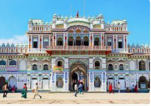

HISTORICAL
PEACEFUL E-Library for the
NEPAL Nepali Students
E-LIBRARY
HISTORICAL
PEACEFUL
E-Library for the
NEPAL Nepali Students
E-LIBRARY
⚲
Home
Historical Thinking
Browse History
About

 Located in central Nepal, Janakpur was the capital of the ancient kingdom of Mithila, better known as the birthplace of Sita and the city where Lord Ram wed her. Centuries later, the Maithili culture is still evident in this city, which remains untouched by modernity. Thousands of Hindu pilgrims visit Janaki Mandir every year on the Vivah Panchami festival, the anniversary of the wedding of the mythical couple held in November or early December every year. The massive three-story temple complex with over 60 rooms is the crowning glory of Janakpur. Its considered one of the top 10 historical places in Nepal.